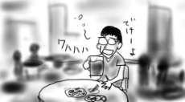
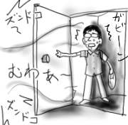
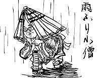
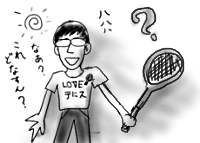

今日は岩槻のお祭りらしく、町中が慌ただしいです。灼熱の太陽にあぶられながらも何だかみんながウキウキしている感じです。家のすぐ横は、近所の少年少女達が神輿を担いだり、めちゃんこめちゃんこ太鼓を叩いたりして行列をする出発地点になっているので、子供達が祭りへの思いを綴ったポスターが貼られているのですが、拙い字で「まつり、命！」と書かれているのは正直考え直した方がいいと思います。
コンロを用意して焼き鳥を焼く人や、氷を浮かべた水槽に缶を浸してジュースを売る人など、様々な形でのウキウキアピールぶりが羨ましくなったので、末席にでもこっそりと加えてもらえないものかなあと思って、西原さんに電話をして、「岩槻で祭りをやってるのでどうか？花火を見ながらビールなどどうか？」と進言したのですが、「今新宿に向かってます」とのつれない返事が。そして、僕も新宿に向かうことに(弱)。
新宿では京急百貨店屋上のビアガーデンで、薄暗いうちから、のんべんだらりと温いビールや、冷めた唐揚げなんかをつまみながらダメな話をダラダラしたので、いい感じに脳が弛緩してよかったです。ビアガーデンは体育系の人たちが騒ぐ声が発散してよく聞こえなくなるのが利点だと思います。室内だったら大変なことになるところですよ(僕の脳が)。

その後、新宿西口に新しく出来たビックカメラでドリキャスパッドを購入しました。また壊れないといいなぁ(消極的希望)。
昨日は、気が付いたら布団に突っ伏して寝てしまって、起きた瞬間に自分が今どこに居るかすら分からないという状態でしたので更新できませんでした。はて、いつ布団に？うわ、電気つけっぱなし！というような状況です。
ここのところ深夜に帰宅してドアを開けると、閉め切った室内でこれでもかと上昇した熱気に加え、隣の部屋のズンドコがダブルパンチで襲い掛かって来るような生活だったので、とっとと寝てしまうのが正解だった気がします。ドアを開けた瞬間にズンドコが響いているというのは精神衛生上よくありません。

仕事の締め切りが近くて、いろいろ切羽詰まってきました。
そんな帰りが遅い日に限って、本屋に寄っていろいろ立ち読みしたり本を物色したりして帰宅が遅れるのは、これはもう習性だから仕方がないです。近くに24時までやっている本屋があって本当によかった。これがなかったらとっくに干上がってたと思います。
思えば高校時代はほとんど毎日学校近くの本屋に寄っていましたし、大学時代は夜中３時までやってる本屋にお世話になったりしました。この３時の本屋はエロと漫画が中心なんですが、エロコーナーを抜けないと漫画コーナーに行けないという逆レイアウトが特徴でした。僕は、そんな中から歴史読本別冊『世界の秘密結社』とか買ってました。とんだ勘違いさんだと思います。
遡って中学時代は、ろくに本を仕入れない近所の小さな本屋に通ってました。町内にその本屋しかなかったので仕方がなかったのです。この本屋では、ポケットが膨らんでいるからという理由で万引きの疑いをかけられたり、欲しい本がなかったので雑誌だけ立ち読みしていたら「毎日毎日立ち読みに来て、恥ずかしいとは思わないのか」と小一時間問いつめられたり、全くろくな思い出がありません。本を仕入れろと問いつめたいのはこっちの方だ！(今頃言っても…)
いやな思い出を掘り当てたところで寝ようかと思います。
今日は朝一で健康診断がありました。普段より１時間半ほど早く家を出なけばならず、しかも前日の天気予報によると、その時間が台風直撃！暴風雨まっただ中なのだそうで、前日に大変憂鬱な思いをしていたのです。ところが実際に朝起きてみると、雨は一滴も降っておらず、多少風が強いかな程度でまったくもって余裕の出社でした。
健康診断で血を抜かれたり、尿を抜かれたりしている間に1時間半が経過し、ふと外を見ると暴風雨で大変なことになってました。つまり、いつもの時間に出社してたら大変なことになるところだったわけです。健康診断に救われた。ある意味期待はずれ(素直に喜びましょう)。

雨降り小僧は、雨を降らせる神様(雨師)に仕える子供の妖怪で、雨が降っている野原などに現れます(そのまんま)。狐の嫁入りの時に、頼まれて雨を降らせたりしたそうです。
ドリキャスのコントローラが壊れました。
正確に言うとRトリガーが壊れました。バンガイオーで言うと「全方位弾(ボム)」のボタンです。こいつはちょっと酷使しすぎたみたいです。後半面は３秒置きくらいの間隔で撃ちまくってたし。それはもはやボムなのか、どうなのか。
しかしこれでは、斑鳩までの繋ぎとして次にやろうと思っていた「ジェットセットラジオ」も操作できないではないですか。これはイカンと、さっそく分解してみたものの、レバー付け根の爪がぽっきり折れてて、接着しても無駄(支柱となって負荷がかかりまくる場所だから)っぽいので修理はあきらめました。
まさかと思ってサターンの丸コンを分解してみたのですが、やはりパーツに互換性があるわけもなく、トリガの流用は無理でした。ああん。
というわけで、しばらくは読んでなかった早川JコレクションのSFシリーズでも読んで過ごすことにします。野尻抱介『太陽の纂奪者』と小林泰三『海を見る人』あたりから。
いい加減伸びて来たので、髪を切りに行ったのですよ。
前回の戦術バトルでは、かなり際どい戦いを繰り広げたので、今回は前回の経験を生かし、唯一まともに見ている「私立探偵 濱マイク」を中心にドラマデッキを組んでおく必要あるでしょう。しかし、短時間でデッキを組み上げるには時間があまりにも足りない。タッキー&池脇千鶴の「太陽の季節」？？それとも「ランチの女」とか「恋愛偏差値」とか仕入れておかないとダメか？など、いろいろ考えたのですが、どれもタイトルしか知りません。これじゃ戦えないよう。「サトラレ」あたりなら漫画話に逃げられないこともないのですが(ダメです)。
で、実際に蓋を開けてみたら、話題は「少林サッカー」と「スターウォーズ」だったので、とても有利に戦いを進めることができました。なあんだ、これなららくしょうだ。組んでおいたデッキは全て無駄になりましたが。エピソードII、万歳ばんざい！
おまけに美容師の女性は「昔のスターウォーズってどれが一番最初かすら分からなくて、どれから見たらいいのか分からないんですよー」とか言ってきます。なんだなんだ、今日はボーナスステージですか？
というわけで、今日から僕のヘアスタイルは「ボーナスカット」と呼ぶことにします。
バンガイオーをクリアした以外は特にこれといったことがない一日でした。
外出しようと思う度に何故か睡魔に襲われて、気がつくと数時間が経過しているというのは何か大宇宙的な現象でしょうか？

今日は、昼休みに同期達にテニスに誘われませんでした。堂々としたはみ男子ぶり。
わざわざ休日にテニスコートに出かけて全編ボーナスステージみたいな得点効率の肉体ゲームをするというのは全く理解しかねますが、さすがに、僕には目もくれずに、隣に座っていた同期に「明日暇？」と聞かれるというのは結構ヘコみます。下手に誘われても、断る理由がとっさに思い付かなくて困るので、いっそ誘わないでくれた方がありがたいのですよ(涙を流しながらガッツポーズで)！ルールも知らないしね。

そんな誘われなさぶりを解消するチャンスだった今日の同期送別会は、仕事が終わらずに完全ぶっちでした。ウワーイ。飲み会という最後のチャンネルも失いつつあります。地球(に住んでる僕の人間関係)がピンチだ！助けて！ナウクリアマン！
というわけで、そのナウクリアマンがステージクリアする度に画面に表れてスコアを教えてくれる「爆裂無敵バンガイオー」もとうとう最終面に到達しました。ラスボスのミサイル400発にボコにされまくってると夜が開けてきたので、今日はこれくらにしておきます。